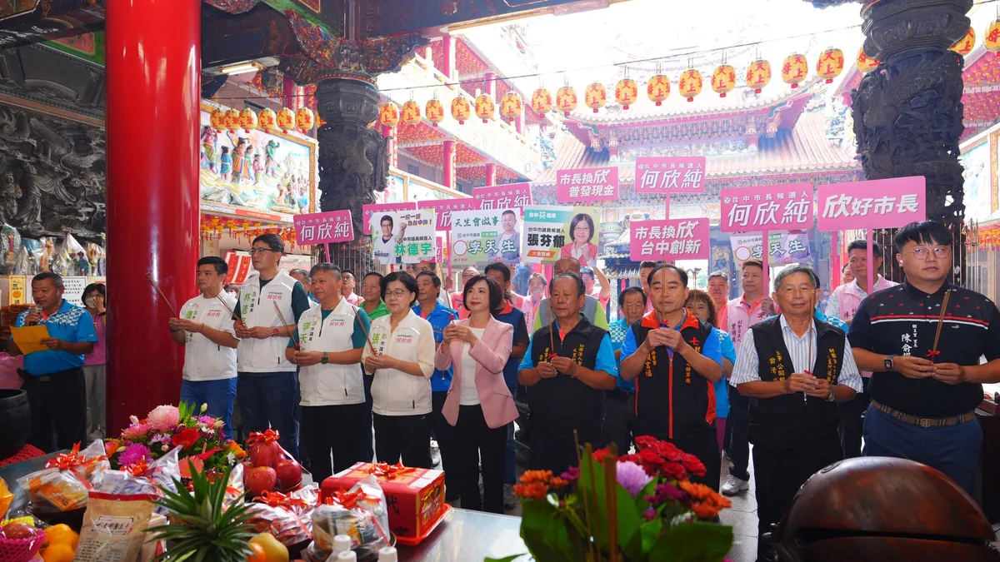
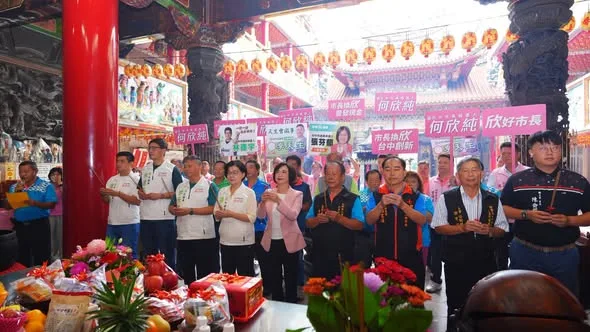

何欣純a_chun1973

@a_chun1973:倒數88天，我正式登記參選台中市市長。 這一路走來，受到許多照顧、得到很多支持 我總是提醒自己：不要辜負選民的交托。 台中市民期待一位會解決問題、會做實事的城市首長！ 這是我的使命，我也願意承擔。 11/28，請大家給台中女兒何欣純一個機會 讓我們共同打造欣欣向榮的台中！
Accounts
| 平台 | 帳號 | 已收錄貼文 | 最後更新 |
|---|---|---|---|
| 官網 | https://a-chun.tw/ | 19 | 2026-09-01 12:00 |
| https://www.facebook.com/94achun/ | 106 | 2026-09-02 16:01 | |
| https://www.instagram.com/a_chun1973/ | 64 | 2026-09-01 16:11 | |
| Threads | https://www.threads.com/@a_chun1973 | 117 | 2026-09-02 18:22 |
| YouTube | https://www.youtube.com/channel/UCFcDN6t7tJ7qObwtyBQHdRg | 120 | 2026-09-02 15:42 |
| LINE 官方帳號 | https://page.line.me/beu1231o | 0 | — |
Timeline
顯示 426 / 426 則
@a_chun1973:倒數88天，我正式登記參選台中市市長。 這一路走來，受到許多照顧、得到很多支持 我總是提醒自己：不要辜負選民的交托。 台中市民期待一位會解決問題、會做實事的城市首長！ 這是我的使命，我也願意承擔。 11/28，請大家給台中女兒何欣純一個機會 讓我們共同打造欣欣向榮的台中！

@a_chun1973:今天，是我正式登記參選台中市長的日子。 出發前，我回到我出生、長大的大里，在福興宮媽祖面前報告：「大里的女兒，要出發了。」 從三屆市議員到四屆立法委員，這一路，我走了很久。每一步，都有故鄉的陪伴；每一次選舉，都有鄉親一票一票的支持，牽著我走到今天。我是大里的女兒、屯區的女兒，也是台中的女兒。 謝謝蔡其昌 @tsaimimi0416 總召接下競選總部主任委員的重任，更要謝謝蔡英文 @tsai_ingwen 前總統答應擔任榮譽主任委員。這份支持，對我來說不只是鼓勵，更是一份沉甸甸的責任。 今天完成登記，是另一段路的開始。我期許自己成為「市民的市長」，讓疼惜我的故鄉以我為榮，也讓每一位台中市民，都能對我們的城市充滿希望。 📣 9月12日下午2點，競選總部正式成立！ 邀請大家一起來，作伙拚出一個更好的台中！
明天， 我將正式登記成為 台中市長候選人， 懇請台中市民為我加油！！

台中青年站出來！何欣純三大青年行動 青年局 青創基地 AI研習所備選

@a_chun1973:來來來，樓頂招樓跤，阿母招阿爸，厝邊招隔壁🙋 何欣純競選總部成立🎉邀請各位來熱鬧～ 9/12（六）下午2點，是我的競總成立大會，當天除了有精彩的馬戲團現場演出，賴清德總統也將親自蒞臨，台中純派我們當天見！ 這裡不只是競選總部，更是大家都能走進來、坐下來、聊聊天的空間，一起交流對台中的想法。 9/12下午，我們競總見！一起為台中加油💪 📌何欣純競選總部地址：台中市南屯區五權西路二段1127號

吃完早餐，要去掃市場，向市民請安問候囉！😘😘 燒餅、水煎包、半熟荷包蛋....一匙蔥花辣椒，再加上一碗溫豆漿，元氣飽滿、感謝鼓勵、迎向美麗的台中！❤❤ 南屯好豆漿店：南屯區向心南路934號 何文海 台中市議員

@a_chun1973:⚠️因天候狀況不佳，原定在今日早上07:00豐樂雕塑公園的行程將先行取消。 造成不便，還請大家見諒！ 若跟親友有約，也請幫我分享這個資訊給他。 後續行程正常不變呦： 08:10 📍大進市場（大墩六街161號） 08:40 📍南屯市場（南屯路2段595號） 17:30 📍建國北黃昏市場（建國北路一段149號） 19:40 📍忠孝夜市（台中路忠孝路口）

從首投族手中接下市長參選登記表，我承載的是青年對台中的期待。謝謝「青純力應援團」給我許多建言和鼓勵！ 台中是一座屬於年輕人的城市，我認為青年朋友在台中應該要有舞台、有機會，更要有未來！因此我提出三項青年行動： 🎯成立 #青年局 🎯打造「山海屯城青創基地／創客中心」 🎯成立「AI創新人才研習所」 我會跟年輕朋友一起拚、一起衝，讓台中這座城市持續欣欣向榮！ #心存大台中 #市長換欣_台中創新

台中青年佔1/4！何欣純 留下青年幫青年追夢

台中三個落差 何欣純用三個第一來解！阿純號設計秘密也公開

今天，我正式登記參選台中市長！ 我期許自己成為「市民的市長」，傾聽每一份聲音、回應每一項需求，讓市民都能對我們的城市充滿希望。 11/28，請大家給台中女兒何欣純一個機會，讓我們一起打造更欣欣向榮的台中！ #心存大台中 #市長換欣_台中創新

今天，是我正式登記參選台中市長的日子。 出發前，我回到我出生、長大的大里，在福興宮媽祖面前報告： 「大里的女兒，要出發了。」 從三屆市議員到四屆立法委員，這一路，我走了很久。每一步，都有故鄉的陪伴；每一次選舉，都有鄉親一票一票的支持，牽著我走到今天。我是大里的女兒、屯區的女兒，也是台中的女兒。 謝謝 蔡其昌總召接下競選總部主任委員的重任，更要謝謝 蔡英文 Tsai Ing-wen前總統答應擔任榮譽主任委員。這份支持，對我來說不只是鼓勵，更是一份沉甸甸的責任。 今天完成登記，是另一段路的開始。我期許自己成為「市民的市長」，讓疼惜我的故鄉以我為榮，也讓每一位台中市民，都能對我們的城市充滿希望。
@a_chun1973:明天， 我將正式登記成為 台中市長候選人， 懇請台中市民為我加油！！

@a_chun1973:⚠️台中陰雨，氣溫也轉涼！考量天候狀況不佳，原定今晚 19:40 忠孝夜市的行程將延期辦理，造成不便請大家原諒🙏 但原訂17:30建國北黃昏市場（建國北路一段149號）的行程如期辦理！ 麻煩大家幫忙轉告、分享消息！ 大家注意安全，我們下次見❤️

吃完早餐，要去掃市場，向市民請安問候囉！😘😘 燒餅、水煎包、半熟荷包蛋....一匙蔥花辣椒，再加上一碗溫豆漿，元氣飽滿、感謝鼓勵、迎向美麗的台中！❤❤ 南屯好豆漿店：南屯區向心南路934號

行動 溫度 創新！阿純號的三大關鍵字

@a_chun1973:大家晚安🌛 明天繼續馬不停蹄，走訪台中各區和大家見面！歡迎台中純派來相會～ 📅9/1（二） 07:00 📍豐樂雕塑公園（文心南五路一段331號） 08:10 📍大進市場（大墩六街161號） 08:40 📍南屯市場（南屯路2段595號） 17:30 📍建國北黃昏市場（建國北路一段149號） 19:40 📍忠孝夜市（台中路忠孝路口） 明天見！期待和純派相遇🙌

從首投族手中接下市長參選登記表，我感受到的，是年輕世代對台中的期待。謝謝「青純力應援團」給我滿滿的建言與鼓勵❤️ 台中應該是一座讓年輕人有舞台、有機會、更有未來的城市！因此，我提出三項青年行動： 🎯 成立 #青年局 🎯 打造「山海屯城青創基地／創客中心」 🎯 成立「AI創新人才研習所」 我要和年輕朋友一起拚、一起衝，用年輕的力量帶動城市向前，讓台中持續欣欣向榮 🌱✨

@a_chun1973:今天我從首投族手中接下「市長參選登記表」。薄薄的一張紙，承載的卻是年輕世代對台中的期待❤️ 感謝「青純力應援團」為我加油，也謝謝每一位台中純派，成為我最堅定的靠山！ 台中20至39歲青年超過全市人口四分之一，我希望年輕人不只留得下來，更能在台中勇敢追夢。因此，我提出三項青年行動： 🔹 成立青年局｜整合就學、就業、創業與國際交流資源 🔹 打造山海屯城青創基地｜提供共享空間、創業育成，支持青年走向國際 🔹 成立AI創新人才研習所｜補助AI數位工具，讓青年掌握新科技、提升競爭力 年輕人的未來，就是台中的未來。我要用行動、溫度、創新，陪青年一起把夢想留在台中、把台中變得更好！ 也邀請大家 9月2日星期三上午，一起到豐樂公園綜合活動中心，陪我正式登記參選台中市長💪💚

何欣純為什麼想參選台中市長？

台中的女兒 海線的媳婦何欣純 正式登記參選台中市長！給我一個機會 打造更欣欣向榮的台中
千人爆場！心純姐妹會成立感動瞬間
何欣純競總 9/12 成立 賴清德力挺、馬戲團親子同樂 台中市長候選人、立法委員何欣純今（1）日 […] 〈 何欣純競總 9/12 成立 賴清德力挺、馬戲團親子同樂 〉這篇文章最早發佈於《 何欣純官方網站｜2026 台中市長候選人 》。

來來來，樓頂招樓跤，阿母招阿爸，厝邊招隔壁🙋 何欣純競選總部成立🎉邀請各位來熱鬧～ 9/12（六）下午2點，是我的競總成立大會，當天除了有精彩的馬戲團現場演出，賴清德總統也將親自蒞臨，台中純派我們當天見！ 這裡不只是競選總部，更是大家都能走進來、坐下來、聊聊天的空間，一起交流對台中的想法。 9/12下午，我們競總見！一起為台中加油💪 📌何欣純競選總部地址：台中市南屯區五權西路二段1127號

@a_chun1973:吃完早餐，要去掃市場，向市民請安問候囉！😘😘 燒餅、水煎包、半熟荷包蛋....一匙蔥花辣椒，再加上一碗溫豆漿，元氣飽滿、感謝鼓勵、迎向美麗的台中！❤❤ 南屯好豆漿店：南屯區向心南路934號

我高中讀的是位於城區的台中女中，城區承載著我青春歲月中最美好的回憶。 可惜的是，城區這些年逐漸走向沒落，如何讓城區重新找回往日魅力，一直是我心中的目標。 未來我會參考英國、歐洲城市的經驗，活化城區的文物與歷史建築，轉型為文化觀光亮點，讓老城區重新熱鬧起來！ #心存大台中 #市長換欣_台中創新
「青純力應援團」成軍 何欣純推 AI 工具補助挺青年 台中市長候選人、立法委員何欣純今（31） […] 〈 「青純力應援團」成軍 何欣純推 AI 工具補助挺青年 〉這篇文章最早發佈於《 何欣純官方網站｜2026 台中市長候選人 》。

@a_chun1973:從首投族手中接下市長參選登記表，我感受到的，是年輕世代對台中未來的期許。特別謝謝「青純力應援團」給我滿滿的建言與鼓勵❤️ 台中應該是一座讓年輕人有舞台、有機會、更有未來的城市！因此，我提出三項青年行動： 🎯 成立「青年局」 🎯 打造「山海屯城青創基地／創客中心」 🎯 成立「AI創新人才研習所」 我要和年輕朋友一起拚、一起衝，用年輕的力量帶動城市向前，讓台中持續欣欣向榮 🌱✨

今天我從首投族手中接下「市長參選登記表」。薄薄的一張紙，承載的卻是年輕世代對台中的期待❤️ 感謝「青純力應援團」為我加油，也謝謝每一位台中純派，成為我最堅定的靠山！ 台中20至39歲青年超過全市人口四分之一，我希望年輕人不只留得下來，更能在台中勇敢追夢。因此，我提出三項青年行動： 🔹 成立青年局｜整合就學、就業、創業與國際交流資源 🔹 打造山海屯城青創基地｜提供共享空間、創業育成，支持青年走向國際 🔹 成立AI創新人才研習所｜補助AI數位工具，讓青年掌握新科技、提升競爭力 年輕人的未來，就是台中的未來。我要用行動、溫度、創新，陪青年一起把夢想留在台中、把台中變得更好！ 也邀請大家 9月2日星期三上午，一起到豐樂公園綜合活動中心，陪我正式登記參選台中市長💪💚
@a_chun1973:開學囉！ 😀😀 今天，是台中不分公私立國中小，孩子通通享有免費營養午餐的第一天。 盧市長賣力宣傳：開學第一週三天雙主菜，開學日還有「L形大雞腿」。 孩子開心、家長當然樂見，但大家更納悶：「很棒啊！ 為什麼只有一週？」 很多市民朋友跟我說：「阿純，你根本是政策許願池，你提出的政見，市府沒多久就跟上！」 敬老愛心卡、腸病毒疫苗補助、免費營養午餐……台中明明早就可以做，為什麼等阿純提出來才做？ 台中值得最好的政策牛肉，孩子更值得。 我最早提出「不分公私立國中小，營養午餐通通免費」。 當初盧市長以財源困難為由沒有採納，直到台北、高雄陸續推動，盧市長才急轉彎、趕忙上車跟進。 我進一步提出「2380大升級營養午餐計畫」：營養午餐免費、每週2天鮮乳、寒暑假不中斷，3天鮮果，每餐補助提高到80元，讓孩子天天攝取營養、健康成長。 「何欣純許願池」果然再現，盧市長開學首週加碼大放送。 但，下週呢？ 孩子的營養健康，不該當作瞬間的政治煙火秀。 因為真正好的政策，應該長期、穩定、持續照顧孩子。